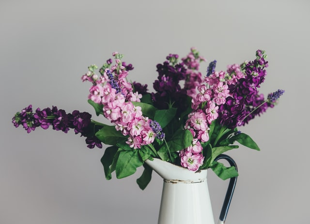
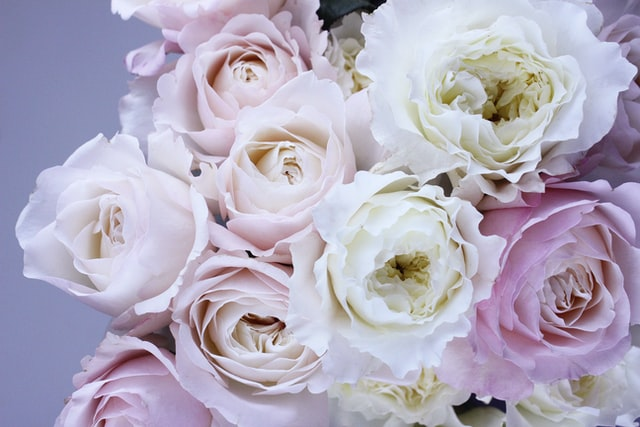
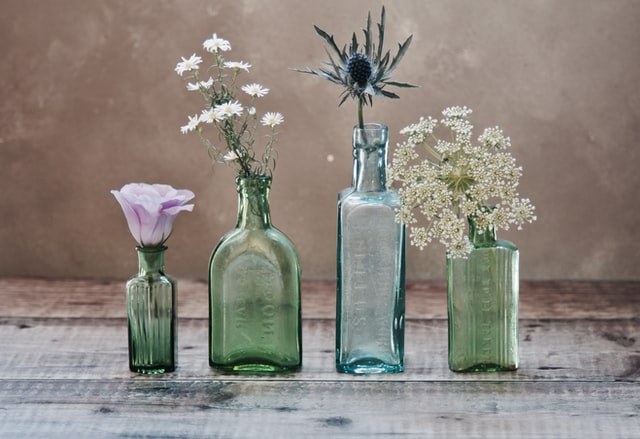

Spring is here!
Decorating the house & garden



Stepping back into the garden after a long, harsh winter can be overwhelming, but it is also a time of relief. Creating a place to relax and take all your stress away is now a piece of cake. Get ready to welcome spring and enjoy your back yard! But what about indoors? Making a pleasant and relaxing atmosphere inside the house -by decorating with fresh blossom bouquets and plants- is a must. Plus, it boosts productivity and good mood.. Get some inspiration and read more about spring decoration ideas.